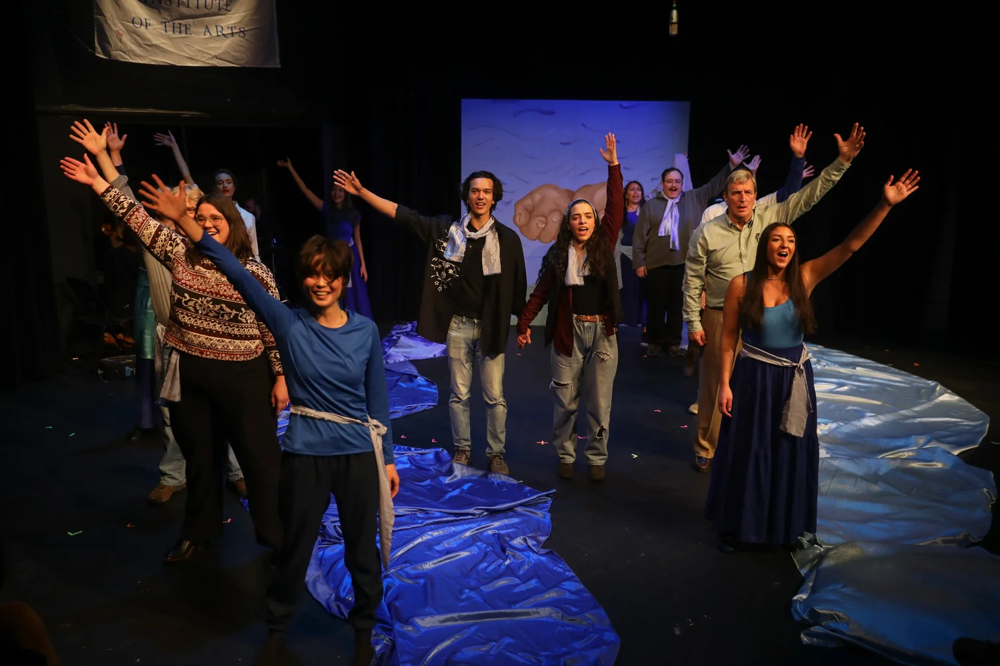
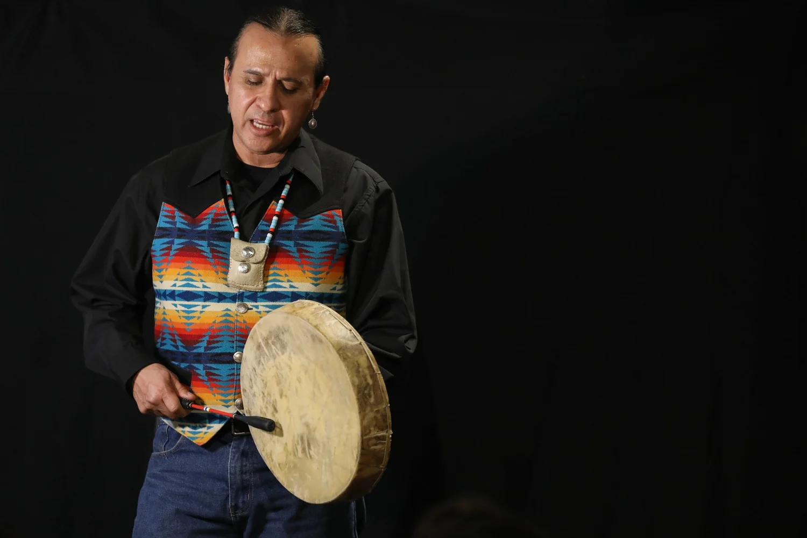
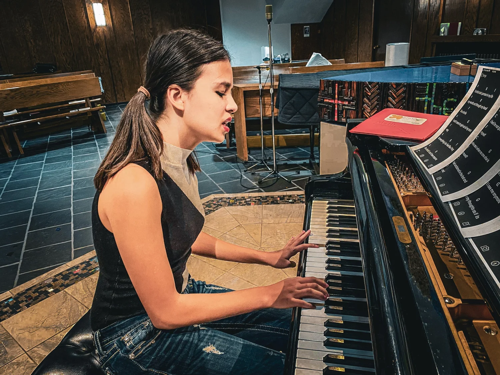
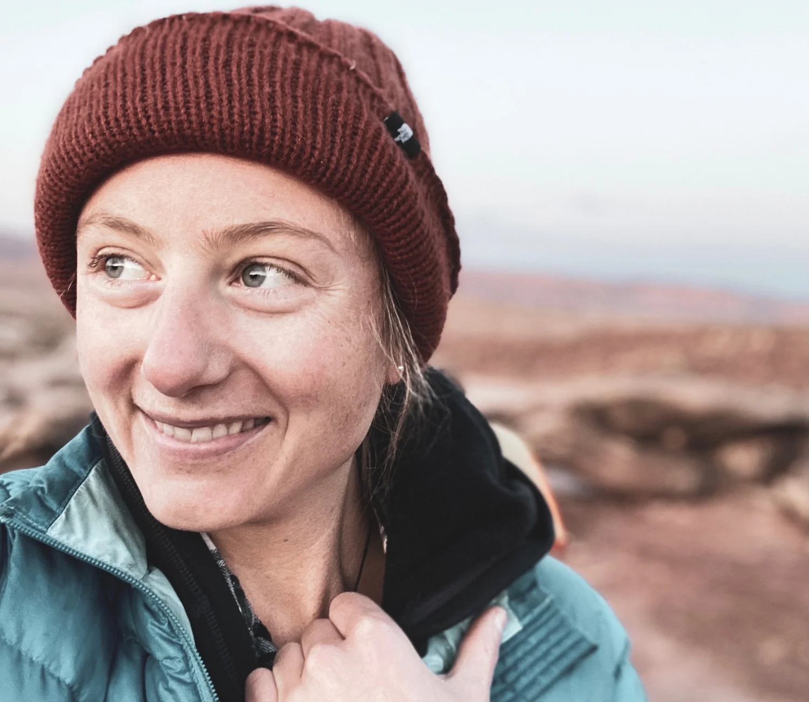

FEATURE SHOWS
From idea to stage, our team produces new plays and musicals that explore what it means to be American in a time of deep cultural divide. We engage in vast amounts of research, consultation, and early readings to hone our ideas. Then, we invite you to come watch our world premiers.

ONE VOICE SERIES
Our “One Voice” monologue series features stories from you, our community, that help foster empathy for different perspectives and lived experiences. We work with individuals to write, edit, and perform personal essays in front of an audience. The monologues are accompanied by a live musical response, and a talk-back after the show.

CONCERTS
We produce musical concerts featuring original music that inspire hope, connection, and healing during a divisive time in America.
The mission of Empathy Theatre Project is to develop original theatre that strengthens connection, inspires dialogue and fosters empathy in our divided country.

Empathy Theatre Project is a team of playwrights, producers, directors, and musicians that work together to develop new theatre that fosters empathy in our divided country.
My name is Cordelia Zars. I am a journalist, playwright, musician, and Founder of Empathy Theatre Project.
After the 2016 election in America, I realized that the division in our country indicated a loss of empathy for people with different lived experiences, regardless of political affiliation. We strengthen our identities by rejecting others, and while different opinions contribute to a healthy democracy, believing half the country is crazy does not. Social media, the news, geographical distance-- they all allow us to objectify and generalize entire populations. But listening to a fellow human tell you why they’re struggling? Objectification gets a lot harder.
That’s why theatre holds tremendous potential to foster unity in our country during a time of deep cultural division. So I write musicals about social and environmental problems that polarize our country--such as gender expectations, racial inequity, and land usage conflicts. With my shows, I hope to encourage compassion for those we may oppose, in order to facilitate lasting conversation and solutions.
Because the only way to achieve true democracy is together.
In 2019, my friend Max Middleton and I started an LLC called Arête Theatrics as a space to produce my first original show, Man Up: A Musical. Seeing the powerful effect Man Up had on audiences in Colorado and Wyoming, I founded Empathy Theatre Project in 2021 to expand my mission as an artist. ETP is a space where musicians, artists, and playwrights collaborate to create theatre that addresses the divisions we face in America, and builds empathy for a brighter, and kinder, future.
Our Philosophy, Unpacked
Check out our recent interview with the Envision Rise Podcast— a show dedicated to creating equitable workplace cultures. Directors Cordelia and Max describe the importance of art for creating unity in a time of cultural division.